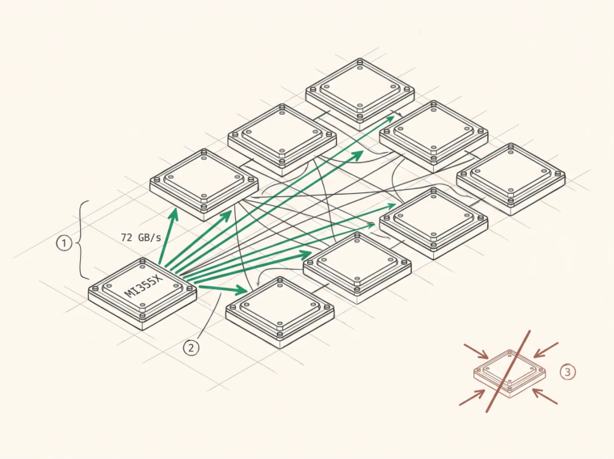

The Interconnect Fabric
GPU interconnects
AMD Infinity Fabric , or xGMI, gives MI355X seven links per GPU for roughly 1,075 GB/s of aggregate peer bandwidth per GPU . In the standard 8-GPU node every GPU has a direct link to every other, a fully connected mesh with no switch, and each pairwise link runs around 153 GB/s bidirectional.
Be careful with what those numbers mean, because per-link and aggregate figures get conflated constantly. A pair of GPUs talking to each other uses one link and gets that link’s bandwidth, while a GPU participating in an 8-way collective drives all seven and approaches the aggregate. Any figure like “864 GB/s per link” is an aggregate number that lost its label somewhere.
Measured rather than specified, mainarch’s xgmi_probe microbenchmark on 8×MI355X records a single-link write at about 72 GB/s , consistent with 153 GB/s bidirectional, and per-GPU all-to-all throughput that rises with transfer size , 133 GB/s at 8 MiB, 181 at 16 MiB, 324 at 64 MiB.
That ramp is the single most actionable fact in this chapter. Fabric bandwidth isn’t a constant you can plug into a model, it’s a function of transfer size, and algorithms that chop a large transfer into many small per-chunk kernels never leave the ramp.
NVIDIA NVLink gives H100 fourth-generation links at 900 GB/s aggregate per GPU with NVSwitch providing all-to-all in an 8-GPU node, and B200 fifth generation at 1.8 TB/s. Rack-scale NVL72 systems extend one NVLink domain across 72 GPUs.
Scale-out means InfiniBand, NDR at 400 Gb/s or XDR at 800, or RoCE over Ethernet, with GPUDirect RDMA so NICs read and write GPU memory without staging through the host.
Topology and its consequences
Within a node the two dominant topologies behave differently for collective design. A fully connected mesh gives every GPU a private link to every peer, so a collective where all eight GPUs drive all seven of their links simultaneously uses the full bisection with no shared switch to contend for. A switched topology gives every GPU one fat pipe to a switch that provides all-to-all, which is simpler to reason about with the switch as the shared resource.
Across nodes the network is the fabric, an order of magnitude slower and two orders higher in latency, which is why single-node topologies dominate inference deployment decisions. Fitting the model in one node is worth a great deal.
The asymmetry, or why push beats pull
Here’s a finding that reshapes collective design once you internalise it. On these fabrics, remote writes
stream better than remote reads .
The reason is straightforward once stated. A remote write is fire-and-forget, so the source issues stores and moves on with many in flight, while a remote read is a request-response round trip, so the number in flight is bounded by the requester’s outstanding-request capacity and each one’s latency is fully exposed.
Measured on MI355X, switching the all-gather phase from pull, where each GPU reads what it lacks, to push, where each owner writes its chunk to all peers, took 64 MiB bus bandwidth from 58 to 80 GB/s . Converting the reduce-scatter phase to writes as well, scattering into peers’ staging buffers and then summing locally at HBM speed, took it from 80 to 104 GB/s . Same data volume, same topology, same hardware, and the direction of the transfer was worth 1.8×.

O
1Eight modules, each with a direct link to every other. There is no switch to contend for, so a collective where all eight drive all seven of their links uses the full bisection.O
2A remote write is fire-and-forget, so many can be in flight at once. Measured on this fabric, a single link write sustains about 72 GB/s.O
3A remote read is a request and a response, so the number in flight is bounded by outstanding-request capacity and every latency is exposed. Switching the all-gather from pull to push was worth 58 to 80 GB/s, and converting the reducescatter as well took it to 104.
Design every collective around pushing.
Peer access
Peer access from Chapter 6 is the mechanism. Allocate in one GPU’s VRAM, map into another’s address space, and let kernels load and store across the fabric directly.
The detail that matters for correctness is the memory model. A store to peer memory isn’t visible to the peer’s subsequent loads until it’s ordered by a release at system scope , because agent scope isn’t enough when the consumer is a different agent. On gfx9-class hardware that means system-scope atomics with release and acquire semantics, memory_scope_all_svm_devices , plus the corresponding memory barrier. Get the scope wrong and you get a collective that’s correct in testing and intermittently wrong under load, which is the worst possible outcome because it looks like it works.
What the latency floor actually is
You will see a figure of about 20 µs quoted as the floor for a small all-reduce, sometimes described as physics. It isn’t, and why it isn’t is instructive.
The measured floor for mainarch’s host-driven all-reduce at 1 KiB across 8 GPUs is 20.5 µs, which is a real number and a good one against RCCL’s 47.3 µs at the same size. But it’s an implementation floor, one host-to-device handoff plus one round of fabric synchronisation plus one return.
The actual physical bound is far lower. Recent work measuring the speed-of-light latency of GPU collectives on NVLink puts the two-GPU bound at about 1.4 µs , built from two L2 round trips of roughly 0.31 µs each plus a remote store latency of 0.79 µs, and demonstrates barrier-free one-shot kernels achieving 2.37 µs where NCCL’s ring takes about 11. The same work identifies the dominant cost in small-message collectives precisely, which is global memory barriers , each costing over 1 µs, so that two barrier calls can be 40% of a 5 µs four-GPU all-reduce.
So the correct statement is that the physical floor is around a microsecond, host-driven implementations sit at tens of microseconds because of the host handoff and the barriers, and getting from one to the other means removing the host from the loop and removing barriers from the algorithm. That’s a research programme with a known direction rather than a wall.
Topology-aware peer ordering
When a GPU has to reach several peers, contact them in an order that reflects the fabric, direct xGMI or NVLink peers first, then PCIe-attached peers, then remote nodes. On a fully connected node all peers are equidistant and the ordering is a formality, while in partially connected topologies, some 4-GPU configurations and multi-node systems and GPUs split across NUMA domains, it matters a great deal, and the ordering comes from reading io_links in sysfs or the equivalent device properties.
Related and often overlooked is rank placement , meaning which process gets which physical GPU. A tensor-parallel group spread across two NUMA domains or two PCIe roots performs very differently from one that isn’t, and the mapping is usually decided by an environment variable nobody has looked at.
Key Concept
Know your fabric’s real numbers. MI355X has 7 xGMI links per GPU totalling about 1,075 GB/s, each pairwise link around 153 GB/s bidirectional, and measured per-GPU throughput that ramps with transfer size from 133 GB/s at 8 MiB to 324 GB/s at 64 MiB. Build every collective around remote writes, which measured 1.8× better than reads for the same data movement. And don’t mistake an implementation floor for physics, since the speed-of-light bound for a small all-reduce is around a microsecond while host-driven implementations sit at tens, with the gap being host handoff and memory barriers, both removable.
Exercises
Distinguish per-link, per-GPU aggregate, and bisection bandwidth for an 8-GPU fully connected node with 153 GB/s bidirectional links. Which applies to a pairwise copy, and which to an 8-way all-gather?
Explain mechanically why remote writes achieve higher sustained bandwidth than remote reads, in terms of outstanding transactions.
Given the measured all-to-all ramp of 133, 181, and 324 GB/s at 8, 16, and 64 MiB, estimate the penalty of splitting a 64 MiB collective into eight 8 MiB kernels. What does that imply about chunking strategy?
Build: write a peer-bandwidth probe measuring write and read throughput between every GPU pair and produce the bandwidth matrix. Does your node match its documented topology?